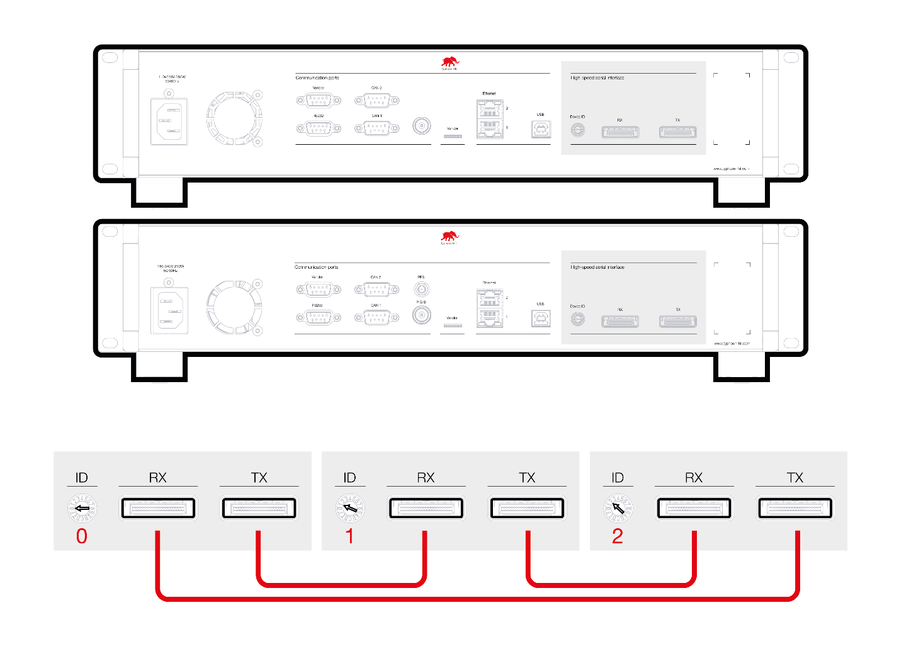
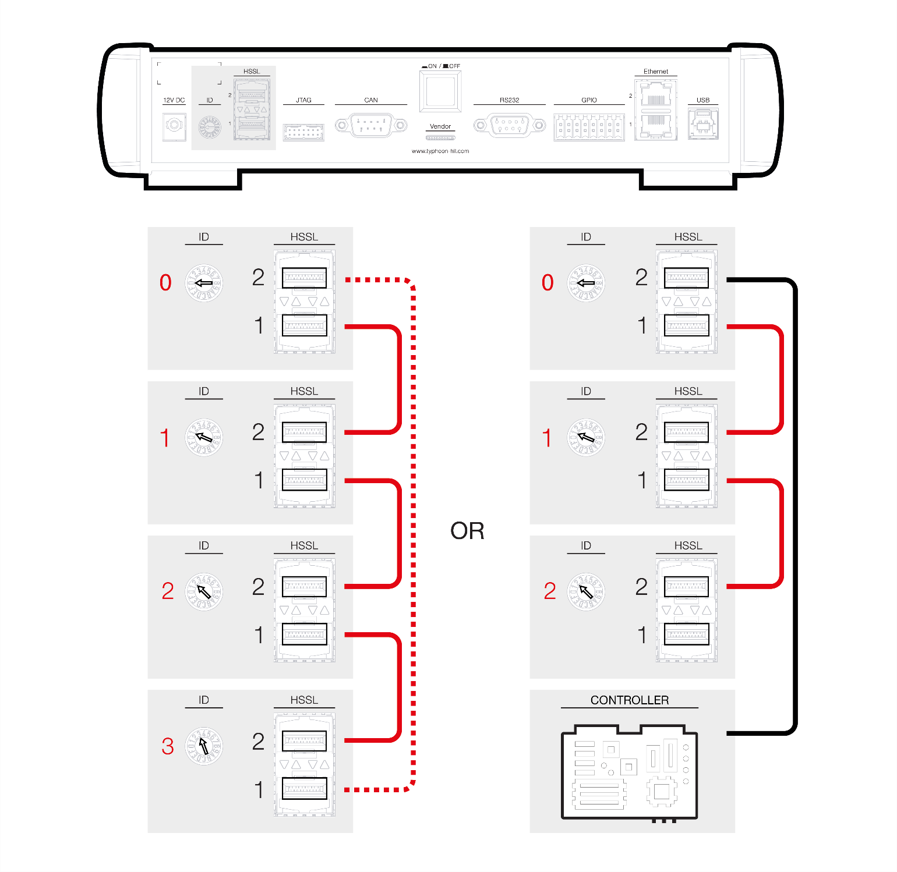
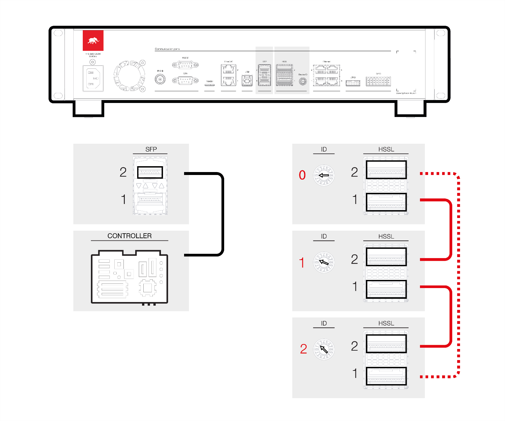

HW setup
Instructions on how to setup a parallel connection of hardware devices.
Connecting devices
Devices are connected using either:
- HIL101 or HIL404: 2 SFP+ ports on the back plate of the devices and standard SFP+ optic module with cables. HSSL2 port can be shared for SFP Simulation Link.
- HIL602+ or HIL604: 2 PCIe 4X connectors on the back plate of the devices and standard PCIe 4X v2 or better cables.
- HIL506 or HIL606: 2 QSFP28 ports on the back plate of the devices and standard QSFP28 optic module with optic cables or passive direct attach copper QSFP28 cable. For SFP Simulation Link there are independent SFP ports.
- Recommended cable part numbers are given in Table 1.
| Device | Manufacturer | Part number |
|---|---|---|
| HIL101 | FS | SFPP-PC01 |
| HIL404 | FS | SFPP-PC01 |
| HIL602+ | Molex | 74546-0401 |
| HIL604 | Molex | 74546-0401 |
| HIL506 and HIL606 | FS | QSFP-PC01 |
Connection mode for HIL602+ and HIL604 devices
HIL602+ and HIL604 devices should be connected over Daisy chain to establish a Link.
Daisy chaining is ensured by connecting TXN -> RXN and TXP -> RXP connectors between devices until the ring is closed. If a parallel setup is not designated for use, all daisy chained HIL devices can be used independently.

Connection mode for HIL101, HIL404, HIL506 and HIL606 devices
HIL101, HIL404, HIL506 and HIL606 devices should be connected point to point from the HSSL1 and HSSL2 connectors on one device to another device. Figure 2 represents one way of connecting devices. HIL device 1 is connected to HIL device 2, HIL device 2 to HIL device 3, and so on. Lastly, HIL device 1 can be connected to the HIL device 4, to minimize transfer delay between HIL devices. Also, certain HIL devices from the Figure 2 setup, can be designated for use in a smaller parallel setup (e.g. including HIL device 0 and HIL device 1), while the remaining devices can be used individually. If a parallel setup is not used, all HIL devices can be used independently.
Additionally, connections to third-party devices on HIL101 or HIL404 can be done over SFP Simulation Link or SFP Simulation Link through the upper (HSSL2) connector, while on HIL506 and HIL606 this is done via the dedicated SFP connectors, as shown in Figure 3.


Device IDs
Device ID numbers in a multi-HIL configuration should be continuous starting from zero. For example, in a 2-unit system: IDs should be 0 and 1; in a 3-unit system: 0, 1 and 2; and so on. The Device ID number is completely independent of the device position in the ring.